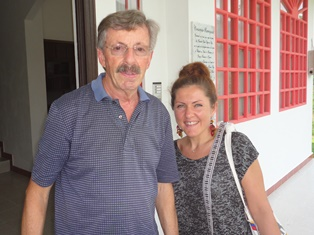
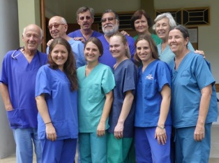
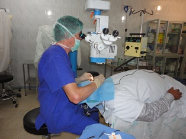
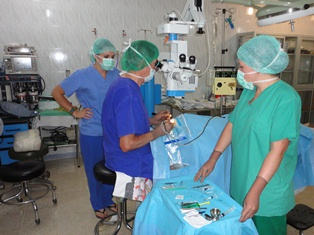
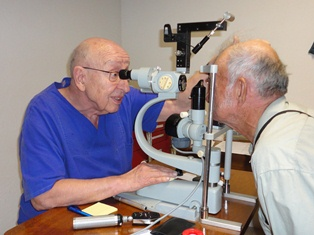
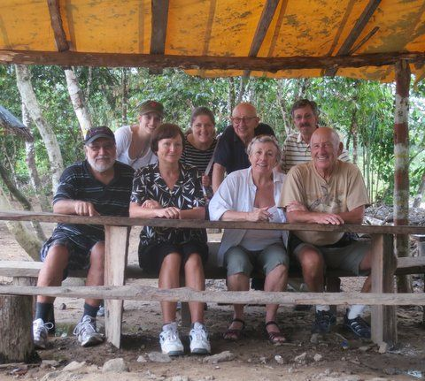

Giersbergstrasse 83
57072 Siegen
Deutschland - Germany
++49 271 4889674
http://www.belenus-siegen.de
info@belenus-siegen.de
Dr.H.U.Frank@t-online.de
Travel Info:
Thank you very much for the help you have provided to our patients.
Unser diesjähriger Aufenthalt, der schon fast zur Routine geworden ist, fand vom 8.1. bis zum 27.1.2016 statt. Dieses Jahr waren nur Liana Jung und ich hingefahren, da wir vor Ort in Amanda eine erfahrene Koordinatorin in dem Untersuchungsraum hatten. Trotz „Nichtreklame“ standen am 8.1. rund 140 Patienten vor der Türe, so dass anschließend die OP-Liste für die 1. Woche fast gefüllt war. Insgesamt hatten wir ca. 680 consultas und davon 147 Operationen, davon 90 Pterygien und 49 Cataracte. Sehr schön war es, dass wir 3 wirklich Blinden mit einer Cataract-OP wieder zum Sehen verhelfen konnten. Auffallend war es, dass sehr viele Patienten mit grauem Star (Cataract) kamen, die auf das kommende Jahr vertröstet werden mussten. Im Vergleich zu den letzten Jahren war die Wetterlage insgesamt sehr warm. Der Aufenthalt in der Residenz, das Zusammensein mit den Schwestern und P.Georg, und die Zusammenarbeit mit Marianna und Amanda haben über manchen „Stress“ hinweggeholfen. So hoffen und freuen wir uns auf das nächste Jahr.
Dr. Hans-Ulrich Frank
Vom 9.1. bis 4.2.2015 waren wir (Liana Jung, Carina Tabra und ich) wieder nach Ecuador geflogen, um vom 10.1. bis 1.2. die augenärztliche Versorgung in der Klinik Guadalupe zu übernehmen. Am Samstag (10.1.) saßen schon die ersten Patienten vor der Klinik und so standen Montagsmorgen über 200 Menschen vor der Türe. Da ich leider keinen weiteren Kollegen gefunden hatte, konnten wir nur ca. 150 Patienten an dem Montag ansehen. In den folgenden Tagen mussten wir daher consultas und OP´s in Einklang bringen, was häufig nur durch verkürzte Mittagspausen bzw. längere Behandlungszeiten nachmittags zu bewältigen war. Immerhin konnten wir 53 Katarakte, 83 Pterygien und 5 kleinere Eingriffe operieren bei 835 consultas. Da die augenärztliche Versorgung sehr gefragt ist, sollten doch immer 2 Augenärzte zum Einsatz kommen. Da ich einige Artikel für den OP bei einem Kollegen in Guayaquil bestellt hatte, war die Kofferanzahl deutlich geringer. Angenehm war der Aufenthalt mit Anna, Nadin, Siegbert und Steve, später noch Gisela und Gerhard. Leider war das Wetter dieses Jahr regnerischer als in den vergangenen Jahre, besonders an den Wochenenden. Dafür wurden wir bei unserem 3-tägigen Abschlussbesuch in Guayaquil mit Sonne und Hitze versöhnt.
Dr. Hans-Ulrich Frank
Bericht 2014
An der diesjährigen augenärztlichen Jornada, die vom 6.1.2014 bis zum 24.1.2014 dauerte, war das gleiche Team wie 2013 beteiligt (Liana Jung, Carina Tabra, Dieter Lemke und Hans-Ulrich Frank). Wir konnten in diesen 3 Wochen 1134 consultas durchführen. Erstmals kam es zu einer deutlichen Steigerungen der Cataract-OP´s (82). Bei 64 Patienten wurde eine Pterygium-OP vorgenommen und bei weiteren 5 Patienten kleinere Lid-OP´s. Harmonisch verlief wieder der Aufenthalt in der Residenz mit Sonja und Claudio, Linda und Martin, Karola und später Manuela. Die gemeinsam gestalteten Wochenenden gaben uns wieder Kraft für die anstehende Woche in der Klinik. Das lecker gekochte Essen von Carmen bei den Schwestern sorgte für das leibliche Wohl bewacht vom Haushund Pitufa. Da wir leider – wie immer – nicht alle Patienten versorgen konnten, mussten wir sie aufs nächste Jahr vertrösten.
Dr. Hans-Ulrich Frank
Vom 18.2.20123 bis zum 8.3.2013 haben wir - d.h. Dr.Dieter Lemke, Liana Jung, Carina Tabra und ich - die augenärztliche Versorgung im Yacuambi-Tal übernommen. Gekennzeichnet waren die Tage von einem noch nie dagewesenen Andrang von Patienten. Gleich am 1.Tag hatten wir über 120 Menschen in der Ambulanz angesehen, um gleich die notwendigen Operationen einzuteilen. Im Gegensatz zu den früheren Jahren ebbte der Strom der Patienten nicht ab. So konnten wir insgesamt 1001 Patienten ansehen, 98 Pterygien-, 58 Cataract- sowie 4 kleinere Lid-Operationen durchführen. 
Es hat sich wieder gezeigt, dass am besten 2 Augenärzte vor Ort sind – 1 in der Ambulanz und 1 im OP. Liana sorgte im OP- und im Sterilisationsbereich für eine perfekte Leistung, während Carina mit ihren hervorragenden Spanischkenntnissen mit Dieter die Consultas übernommen hatten. Mit Dieter war ich schon vor 16 Jahren in Brasilien (Cruzeiro do Sul/Acre) tätig.
Aufgelockert war unser Aufenthalt durch Fahrten in die nähere Umgebung, sowie ein trockenes Wochenende in Vilcabamba. Durch ein Radio- und Fernsehinterview hoffen wir, dass sich die Arbeit in der Klinik auch weiterhin positiv auf die Bevölkerung auswirken wird. Dank sagen möchten wir für die Gastfreundlichkeit, die Sorge um unser Wohlergehen und das leckere Essen den Schwestern, P.Jorge, sowie allen Mitarbeiterinnen. Das immer harmonische Zusammenleben in der Residenz mit Paula, Siegbert, Johanna, Sebastian, Martina und Stephen rundete den Aufenthalt in Guadalupe ab.
Dr. Hans-Ulrich Frank
Vom 9.2. bis 27.2.04 waren wir (Frau Hannelore Münch und Dr.Hans-Ulrich Frank) erstmals in Guadalupe augenärztlich tätig.
Durch viele mails waren wir auf die Ausrüstung (Augen) in der Klinik vorbereitet, so daß wir die noch notwendigen Geräte mitbringen konnten. Überrascht waren wir von der sehr guten Unterbringung auf dem Missionsgelände sowie von der hervorragenden Verpflegung.
Padre Jorge Nigsch hatte uns von vielen Einbestellungen von Patienten vorher berichtet, aber über einen so großen Zulauf während der ersten 10 Tagen war er selbst überrascht. Es war teilweise ein so großer Andrang, daß wir zunächst nur nach operativen und nichtoperativen Diagnosen trennen konnten. Brillenkontrollen waren nur stichpunktartig möglich. Während unseres Aufenthaltes haben wir 31 Katarakt- und ca. 80 Pterygienoperationen und einige kleine Lid-OP´s durchgeführt. So manche total erblindete Menschen wieder zum Sehen zu bringen, war ein sehr schönes Erlebnis. Leider waren auch einige darunter, denen man durch eine OP nicht mehr helfen konnte (z.B. Papillenatrophie, Glaukom, Degenerative Veränderunghen). Da die apperative Ausstattung, außer dem OP-Mikroskop, sehr im argen liegt, werden wir uns um den weiteren Aufbau bzw. Ausstattung kümmern.
In Padre Jorge haben wir einen sehr engagierten und hilfsbereiten Menschen kennengelernt. Bedanken möchten wir uns auch bei den lieben Schwestern, die uns neben all ihrer Tätigkeit gezeigt haben, wie Karneval in Ecuador gefeiert wird. Mit Amanda, Beena, Gudrun, Brigitte, Claudia, Arabella, Eberhard und Andreas hatten wir in der "Residenz" eine Superbesetzung!
Dr. Hans-Ulrich Frank
Vom 7.2. bis 28.2.05 waren wir (Frau Hannelore Münch, Dr.Hans-U.Frank zum 2.Mal und Frau Lieselotte Geldmacher, Frau Elisabeth Bräuer, Dr.Hartmut Kramer zum 1.Mal) in der Augenabteilung der Clinica Guadalupe tätig. Im Prinzip kann ich auf meinen Bericht von 2004 verweisen. Wir wurden wieder durch die Karnevalszeit in unserem Tatendrang etwas eingeschränkt, daher sollte man doch das Karnevalswochenende bis Aschermittwoch nicht in den Arbeitsplan miteinbeziehen.
Da wir eine neue Spaltlampe aus Deutschland mitbrachten, war ein normaler Untersuchungsablauf möglich. Operiert haben wir ca. 35 Katarakte, ca. 130 Pterygien und kleine Lid-Op`s. Untersuchungen haben wir an ca. 520 Patienten durchgeführt.
An dringenden Geräten zur Verbesserung der Abteilung wäre ein neues OP-Mikroskop und ein autom.Refraktometer zu nennen. Die Katarakt-OP haben wir e.c. durchgeführt, die bei den Linsentrübungen angebracht ist. Bewährt hat sich erstmals, daß wir zu 2 Augenärzte tätig waren, so konnte einer die consulta machen, der andere konnte operieren. Bei starkem Patientenandrang ist dies alleine kaum zu bewältigen.
Durch eine andere Besetzung (als 2004) in der "Residenz" hatten wir ein sehr harmonisches Zusammenleben, z.B. haben wir jeden Morgen das Frühstück gemeinsam "zelebriert". Beim Mittag-und Abendessen sind wir von der Schwesternküche sehr verwöhnt worden. Padre Jorge hatte wie immer für alles ein offenes Ohr.
Abschließend kann ich nur jedem augenärztlich Interessierten den Aufenthalt und die Arbeit in der Clinica empfehlen. Wichtig sind auf jeden Fall spanische Grundkenntnisse.
Dr. Hans-Ulrich Frank
Vom 11.2.06 - 8.3.06 haben wir (Hannelore Münch und ich) zum 3.Mal in der Augenabteilung der Clinica"Nuestra Señora de Guadalupe" gearbeitet. Dieses Jahr waren mit uns gefahren: Ulrike Dahl, um uns in der Verständigung zu helfen und Hans-Herbert Quast, der uns im OP und bei der Arbeit mit dem neuen Phakogerät der Fa.Oertli unterstützt hat.Insgesamt war es von der Patientenzahl etwas ruhiger als in den Vorjahren, besonders in der ersten Woche. Es liegt wohl in der Eigenart der Menschen bis zum Schluß zu warten.
Erstmals haben wir die grauen Stare per Phako operiert, was natürlich wesentlich schneller und problemloser war als die e.c. Technik. Durch ein neues Refraktometer wurden die Refraktionen (Brillenwerte) schnell und genau bestimmt. Das neue Mikroskop der Fa.Haag-Streit ist der "Star" im Augen-OP (mit x-y Kupplung). Jetzt können unter Sicht alle OPs im vorderen Augenabschnitt durchgeführt werden. Ein Mitbeobachtertubus muß noch angeschafft werden.
Aufgefallen waren einige Kinder mit erheblichen Refraktionswerten, so daß ich die Überlegung angestellt hatte, Reihenuntersuchungen bei Schulkindern evtl. im 1. Schuljahr durchzuführen, um früh die Problemfälle zu erfassen. Es wurden auch 3 Schulkinder vorstellig mit angeborenem grauen Star. Diese Untersuchungen der Kinder müßten mit den Schulen und evtl. mit den Gesundheitsbehörden abgesprochen werden. Es gibt also im Yacuambi-Tal noch viel zu tun.
Die Gemeinschaft innerhalb der Klinik mit Pater Georg, den Hermanas, Amanda, den vielen Mitarbeiter und den deutschen, österreichischen, amerikanischen und kanadischen Gästen war sehr harmonisch und glücklich! Es waren unvergessliche Tage! Ich kann nur jeden Interessenten auffordern, dieses einmal kennenzulernen.
Dr. Hans-Ulrich Frank
Nach 1-jähriger Abwesendheit haben wir (Dr.Hans-Ulrich Frank, Hannelore Münch, Annerose Nebe, und Ellen Rüting) die Augenabteilung über 3 Wochen wieder aktiviert ( 22.1.- 14.2.07). Die Patientenzahl war täglich gleich groß, so dass wir morgens die Sprechstunde und nachmittags die OPs durchführten. In erster Linie wurden graue Stare und Pterygien operiert, aber auch die erste Schiel-OP im Hospital von Zamora, sowie Lid-OPs sollten erwähnt werden. Insgesamt haben wir 454 Patienten untersucht, davon wurden 95 Operationen durchgeführt. Durch die guten Sprachkenntnisse von Ellen, entwickelte sich ein herzlicher Austausch zwischen uns und den Patienten.
Am ersten Wochende besuchten uns die Dr. Carlos Aguirre und Dra. Graciela Ruiz aus Loja und zeigten uns die südamerikanische Variante der Pterygien-OP, die wir dann ab sofort übernommen hatten, da sie wesentlich weniger Rezidive aufweist. Die grauen Stare wurden ausschließlich per Phako operiert. Leider mußten wir gerade in den letzten Tagen einige Patienten wieder auf das nächste Jahr vertrösten. Beeindruckend ist auch immer wieder zu erfahren, aus welchen Regionen die Patienten kommen bzw. welche Strapazen sie auf sich nehmen, um zu einer Untersuchung in die Klinik zu kommen.
Die Wochenden wurden durch eine Fahrt an den Nangaritza-Fluß und nach Vilcabamba aufgelockert. Nach Abschluß unseres Einsatzes sind wir dann noch auf die Galapagos-Inseln gefahren. Dieses Erlebnis zu beschreiben würde diesen Bericht sprengen!
Bedanken möchten wir uns wieder für die Gastfreundschaft und Hilfe bei Georg, den Schwestern und Amanda. Auch das herzliche Miteinander zwischen uns und der Zahnabteilung sowie den englischen und amerikanischen Kollegen möchte ich noch hervorheben.
Dr. Hans-Ulrich Frank
Vom 11.2. bis 29.2.08 wurde die Augenabteilung zum 5.Mal für 3 Wochen geöffnet. Es gab einen Ansturm, den wir so bisher nicht erlebt hatten. Unser Team bestand aus Annerose Nebe, Ellen Rüting, Lieselotte und Hartmut Kramer (alle zum 2.Mal) und ich (Hans-Ulrich Frank, zum 5.Mal). Da wir 2 Ärzte waren konnten, wir uns die Arbeit dahin aufteilen, daß einer die Consulta übernahm, der andere dann operierte. Annerose hatte als OP-Schwester daher sehr viel zu tun. Sie wurde von Lieselotte tatkräftig unterstützt. Ellen hat die sprachlichen Barrieren mit Charme gemeistert. Wir untersuchten 621 Patienten, führten insgesamt 119 Operationen durch, wo 37 Cataract- und 67 Pterygium-OPs im Vordergrund standen.Leider mußten wir auch einigen Patienten mitteilen, daß für sie keine Behandlungsmöglichkeit mehr gab und sie sich mit ihrem Schicksal abfinden müssen. Auffällig waren einige junge Patienten, die durch das Nichtanschnallen im Auto schwere bis schwerste Gesichts-und Hirnverletzungen erlitten hatten, wodurch z.B. Erblindung auftraten. Beeindruckend war der große Entfernungsradius, woher die Menschen kamen. Durch das neue Sterilisationsgerät konnten wir erstmals auch Hohlkörper (z.B. Schläuche) sterilisieren. Durch den Ansturm waren nicht nur wir, sondern auch Amanda, Rita und Germania stark gefordert. Trotz Arbeit erlebten wir 3 schöne Wochen, in denen wir viele Wanderungen unternahmen. Für die Gastfreundlichkeit möchten wir uns bei Pater Georg Nigsch, den Schwestern und den Menschen in Guadalupe bedanken! Bedanken möchten wir uns auch bei vielen Menschen zu Hause, die unsere Arbeit finanziell unterstützen, so wie bei Firmen wie Fa. Albomed, Bausch u.Lomb und die Bergapotheke, die uns durch Materialspenden geholfen haben. Dieser Aufenthalt spornt uns an, wiederzukommen, um die Arbeit gerne fortzuführen.
Dr. Hans-Ulrich Frank
Vom 1.3. bis 18.3.09 wurde die Augenabteilung wieder eröffnet. In diesem Jahr waren Ellen Rüting, Kristina Leibelt und Hans-Ulrich Frank beteiligt. Gleich am ersten Arbeitstag standen rund 70 Patienten vor der Klinkstüre. Auffallend war, daß praktisch bis zum letzten Arbeitstag eine konstant große Patientenanzahl zur Untersuchung kam, so daß wir insgesamt rund 660 Patienten untersuchen bzw. abklären konnten. 25 Katarakte, ca. 35 Pterygien, kleine Eingriffe wie Chalazien, Fremdkörper und Warzen wurden operiert. Leider hatten wir besonders in der ersten Woche häufig Stromausfall, der dazu führte, daß dann in der 2. und 3. Woche die meisten Operationen erfolgten. Da die Zahnabteilung in großer Besetzung vor Ort war, konnte sie uns mit im OP-Bereich aushelfen, einschließlich Regina Bermes, die als Fotografin für 2 großartige Aufklärungspräsentationen (Zahn und Augen) für den Fernsehapparat im Flur der Klinik sorgte. Insgesamt war es ein sehr harmonischer und angenehmer Aufenthalt. Allen Mitarbeiterinnen der Klinik, den Schwestern und Padre Georg herzlichen Dank. Den Abschluß hatten wir uns mit einem Aufenthalt am Rio Napo im Sacha Lodge "versüßt". Dort konnten wir unter der Führung von einheimischen Führern den Urwald, Tiere und Pflanzen bestaunen.
Mein diesjähriger Aufenthalt in der Clinica Guadalupe mit Ellen Rüting und Kristina Leibelt ist schon fast zur Routine geworden. Nach Ankunft auspacken der Geräte, Instrumenten und Medikamenten und einrichten der Consulta und des Ops. In der ersten Woche kamen zwar viele Patienten, aber zunächst schleppender OP-Beginn. In der letzten Woche mußten wir wieder einige Menschen auf das nächste Jahr zur OP vertrösten. Ein erfreulicher Vertrauensbeweis unserer Arbeit war, daß einige Patienten, die wir vor 1 oder 2 Jahren operiert hatten, in diesem Jahr zur OP des zweiten Auges kamen, sogar eine Frau aus Peru. Erschwert war der Zutritt zur Klinik, da gerade in der Zeit die Hängebrücke neu hergestellt worden ist. Es wurden die Bodenbretter und das Geländer erneuert und gestrichen bzw. die Bodenbretter mit Altöl imprägniert. Plötzlich kamen Menschen mit roten Händen und schwarzen Fußsohlen in die Klinik. Wir haben etwa 600 Patienten untersucht und etwa 90 Operationen durchgeführt, in erster Linie Cataract (grauer Star) und Pterygien. Wir freuen uns schon alle auf das nächste Jahr, um in der Klinik arbeiten zu dürfen.
Mein 8. Einsatz in Guadalupe dauerte vom 19.3. bis zum 7.4.2011. Dieses Mal waren wir nur zu zweit - Annika Killer und ich. Trotz der kurzen Zeit konnten wir über 500 Untersuchungen und 90 Operationen, davon alleine 40 Cataract-Ops durchführen. Erstmals kamen gleich am 1.Tag 105 Patienten, so dass fast die Hälfte unseres OP-Programms gefüllt war. Doch ein deutlicher Vertrauensbeweis für unsere Arbeit! Allerdings stellten wir fest, dass der Arbeitsaufwand für 2 sehr groß ist. Es empfiehlt sich bei so einem Ansturm mindestens zu dritt zu kommen. Neu war für uns auch, dass alle Patienten bei der Anmeldung per Photo und Namen im Computer erfasst wurden. Sehr hilfreich waren alle Mitarbeiter, insbesondere Amanda. Gefreut haben wir uns auch Stephen und Orietta wiederzusehen. Nochmals Danke an alle Mitarbeiter, die Schwestern und P.Jorge. Wir freuen uns aufs nächste Jahr.
Hans-Ulrich Frank
Mein 9. Aufenthalt in Guadalupe war vom 20.1. bis zum 10.2.2012 zusammen mit meiner Tochter Luisa, die uns in der Ambulanz geholfen hat und Liana Jung als OP-Assistentin, die den gesamten OP-Bereich perfekt geleitet hat. In den ersten 2 Wochen war auch mein Kollege Dr.Armin Büttner aus Schwerin da, dabei zeigte sich wiederum, daß 2 Augenärzte in der Klinik sowohl in der Consulta wie auch im OP mehr bewirken können. So konnten wir 735 Patienten untersuchen und 106 Augenoperationen durchführen, davon 42 Katarakt- und 58 Pterygienoperationen. Insgesamt war es ein sehr harmonisches Arbeiten in der Klinik mit allen Mitarbeiterinnen. Angenehm war auch das Zusammenleben in dem Residenz-Haus mit den Zahn-Kollegen und Zahntechniker. Natürlich mußten wir wieder in den letzten Tagen einige Patienten auf das nächste Jahr vertrösten. Bedanken möchten wir uns bei den Schwestern, die uns mit viel Liebe, nicht nur im leiblichen Wohl, versorgt haben. Auffallend für mich war, daß der Hauptkern des Dorfes sehr deutlich verbessert hat.
Hans-Ulrich Frank

January 2014 in Santa Cruz